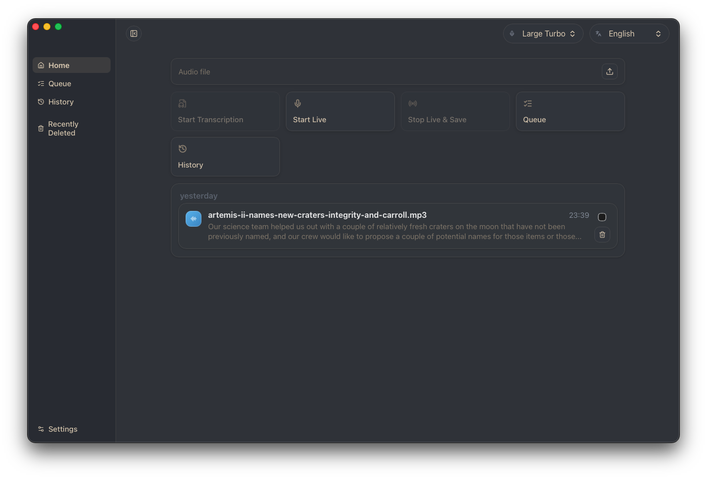
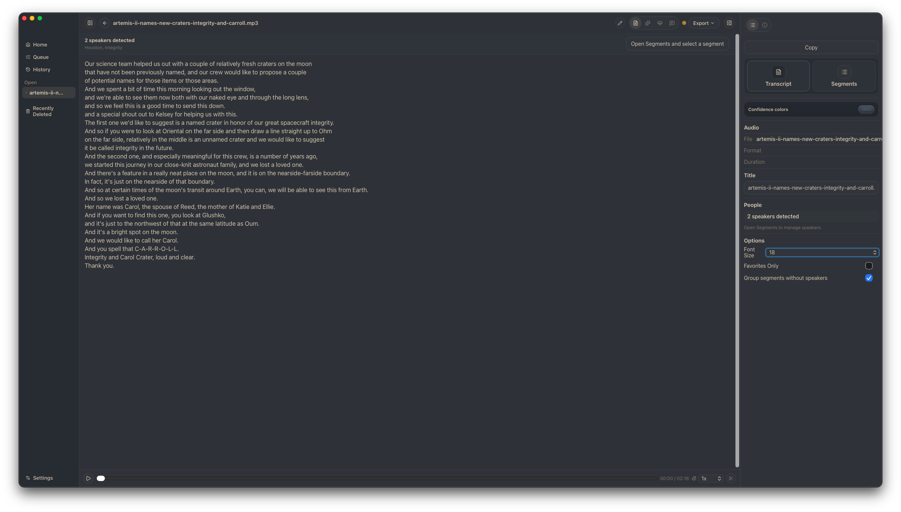
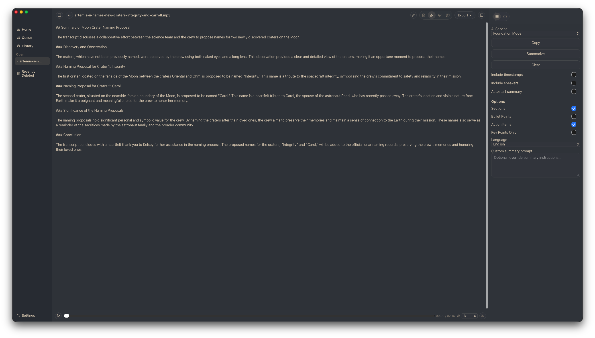
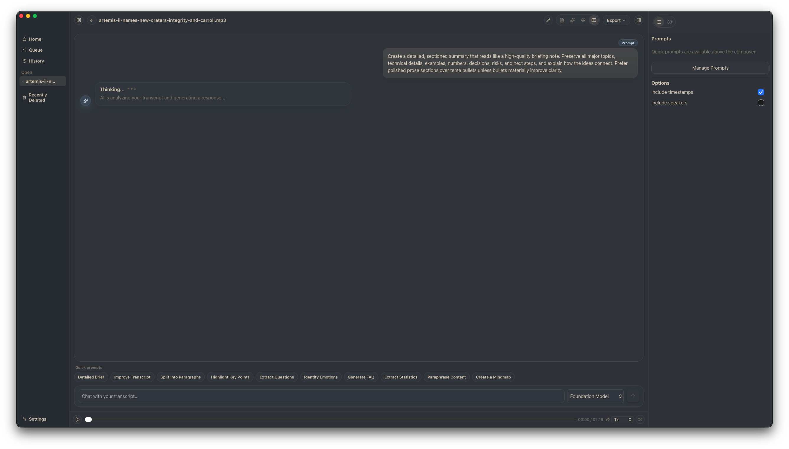
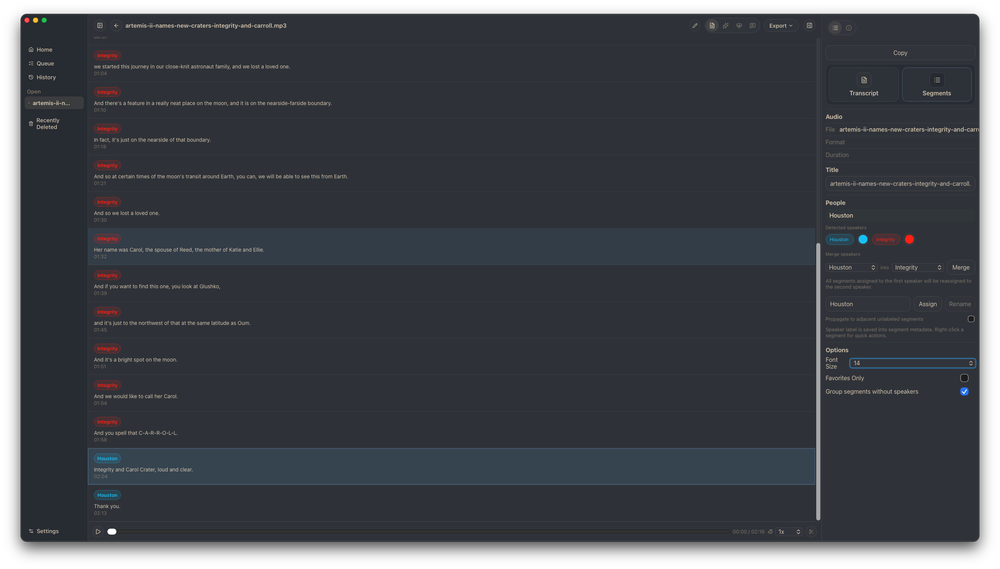
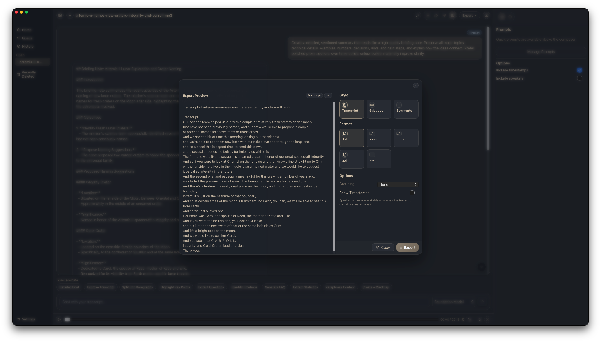
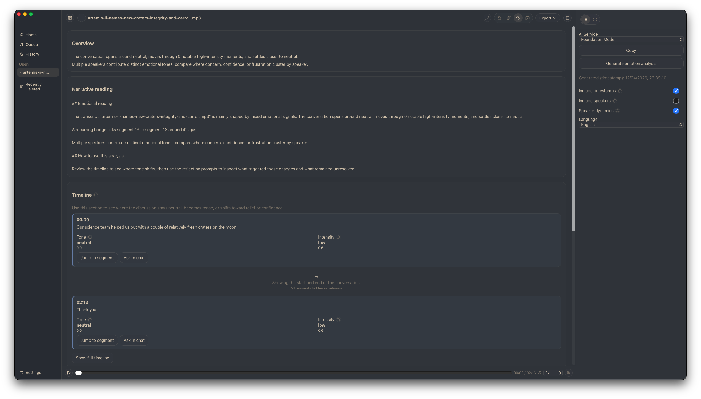
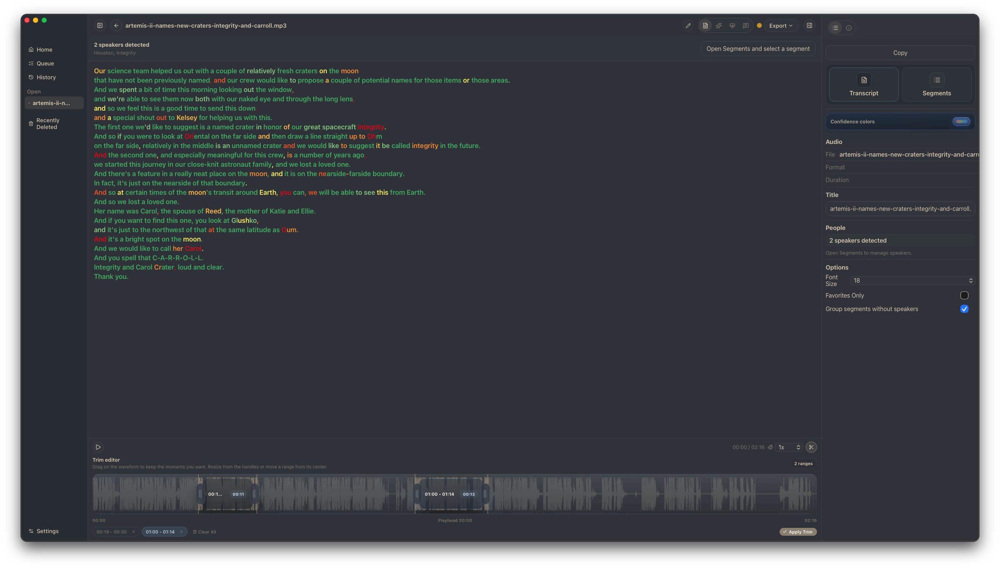

Turn recordings into transcripts, summaries, and documents you can actually use.
Sbobino helps students and professionals transform lessons, meetings, interviews, and voice notes into clear, reusable material — all inside a local-first desktop workflow.

Everything you need after pressing stop.
From raw recording to finished document — Sbobino handles the tedious part of sbobinare so you can focus on understanding, editing, and sharing.
Local Transcription
Transcribe audio files locally on your Mac. See live progress, manage queues, and reopen past transcripts from history.
Transcript Cleanup
Improve readability with AI-assisted post-processing. Keep both original and optimized versions. Trim and create focused child transcripts.
Summaries & FAQs
Generate structured summaries and FAQ-style outputs. Turn long recordings into study-ready or work-ready material in seconds.
Chat with Transcripts
Ask questions directly on your transcript content. Recover facts and clarifications from long conversations without rewinding.
Speaker-Aware Review
Browse timestamped segments. Assign speaker labels. Use local diarization to tell who said what in multi-speaker recordings.
Professional Export
Export to TXT, DOCX, HTML, PDF, Markdown, CSV, JSON, SRT, and VTT. Include summaries and FAQs in your exports.
See what your recordings become.
A focused desktop workspace — from import to export, everything lives in one place.
Your transcript, front and center.
The full transcript view with speaker panel, timestamped segments, confidence highlighting, and editing tools — everything about your recording in one focused workspace.

Long recording, short summary.
Generate structured, narrative summaries from any transcript. Sbobino identifies key topics, extracts main points, and produces clear, readable output.


Ask your transcript anything.
Chat directly with your transcript content. Generate FAQs, recover facts, and find key moments — without rewinding through the original recording.
Who said what.
Browse timestamped segments with speaker labels. Use local diarization to identify voices in multi-speaker recordings — meetings, interviews, and group conversations.


Export Everywhere
9+ formats — documents, subtitles, and structured data.

Emotion Analysis
Understand the emotional tone of each segment and speaker.

Confidence & Trimming
Color-coded accuracy, audio trimming, and re-transcription.
Hear it. See it. Get it.
Play the sample and watch Sbobino transcribe in real time — word by word, speaker by speaker.
A real NASA Artemis II audio clip — transcribed live, just like Sbobino does it.
Press Play to start the transcription demo.
From recording to reusable material in four steps.
Import
Drop an audio file or pick one from your library. Sbobino handles the rest — no setup, no cloud uploads.
Transcribe
Local transcription runs on your Apple Silicon. Watch progress in real time, manage queues, and revisit history.
Summarize & Ask
Generate summaries, FAQs, or chat with your transcript to find exactly what you need — without rewinding.
Export & Reuse
Export to 9+ formats. Share documents, subtitles, or structured data. From recording to deliverable in minutes.
Built for people who record first and organize later.
Students
Turn lectures into readable notes. Generate summaries after class. Create reusable study material from recordings. Less time replaying — more time understanding.
- Lecture recordings to study notes
- Auto-generated summaries and FAQs
- Faster note recovery
- Chat with your transcript to review
Professionals
Document meetings. Capture interviews. Turn conversations into searchable, structured outputs. From recording to summary to shared document.
- Meeting recordings to action items
- Interview transcripts with speaker labels
- Export to DOCX, PDF, and more
- Conversation to searchable knowledge
A real app for your Mac.
Not a browser tab pretending to be an app. Sbobino is a native desktop workspace built for Apple Silicon.
Apple Silicon
Built natively for Apple Silicon Macs. Fast transcription without cloud uploads — your data stays on your machine.
Local-First
Your recordings and transcripts stay on your machine. Set up once, then get back to work quickly. No accounts, no subscriptions.
Lightweight
A focused desktop workspace that launches fast and stays out of the way. Managed runtime — no Homebrew or separate stacks needed.
Less rewinding. More understanding.
Sbobino turns lessons, meetings, and voice notes into transcripts, summaries, and documents you can actually use.
Download Sbobino Free and open source. For Apple Silicon Macs.